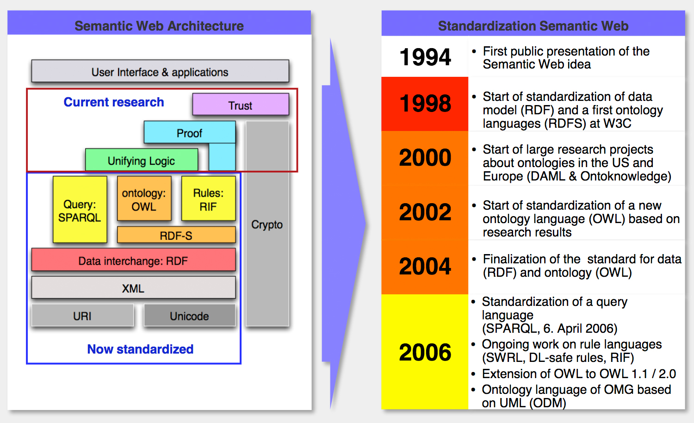

Übung SoSe 2018
Semantische
Datenmodellierung
mit
CIDOC-CRM
MA Zoe Schubert | Dr. Jan G. Wieners SoSe2018 | Universität zu Köln, Institut für Digital Humanities
Veranstaltungsüberblick
Kurzvorstellung
Formalia
Roadmap
Kurzvorstellung
 Zoe Schubert
Zoe Schubert
 Jan G. Wieners
Jan G. Wieners
Formalia
- Klips
- Zuordnung:
Bachelor AM 1 & Master Ergänzungsmodul - Schein:
Teilnahme, Hausaufgaben, Projektarbeit - Termine (Vier Sitzungen)
- 18.04.2018 -- Grundlagen
- 03.05.2018 -- Exkursion Schloss Wahn, CIDOC CRM
- 14.06.2018 -- CIDOC CRM
- 05.07.2018 -- CIDOC CRM
Roadmap 18.04.2018
- Semantic Web:
Herausforderung und Grundlagen - Warm-up:
HTML, XHTML, XML, DTD, Schema - Standards und Sprachen, eine Auswahl: FOAF, RDF, OWL, SPARQL
- Kulturelles Erbe: Über Sammlungen und deren Daten
- Ontologien
- CIDOC CRM
Das WWW und die Semantik
- Die Suche nach der Nadel im Heuhaufen...
- Suchmaschinen stichwortbasiert
- Informationen und Wissen implizit, folgen aus Kombination mitgelieferter Daten

Explizite vs. implizite Information
Wege zum semantischen Web
- Strukturierung / Anreicherung bereits existierender Daten, um algorithmische / automatisierte Verarbeitung zu erleichtern, gar zu ermöglichen.
- Verwendung von Methoden und Werkzeugen künstlicher Intelligenz, um Bedeutung zu generieren.
Voraussetzungen für die Umsetzung des Semantic Web
- Offene Standards zur Informationsbeschreibung:
- klar definiert
- flexibel
- erweiterbar
Semantic Web Stack
Warm-up
Einstiegsthemen
1
HTML
HTML
2
XML
XML
3
DTD
DTD
4
Schema
Schema
PowerPoint Karaoke
- 4 Gruppen bilden
- Einen Umschlag (≙ 1 Thema) von der Glücksfee (Wieners) ziehen
- Impulsreferat zu gezogenem Thema mit unbekannten Folien halten
- Zeitlimit 7 Minuten 30 Sekunden
- Jedes Gruppenmitglied muss mind. 1 Satz sagen
- Jede Folie muss einmal gezeigt und kommentiert werden